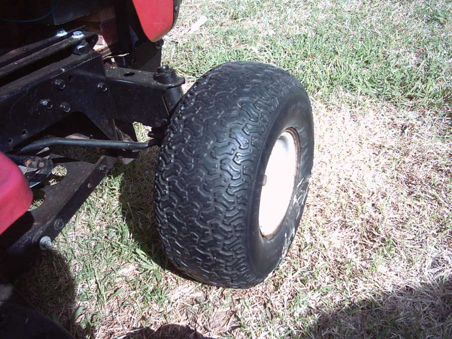

I grew tired of having to air up the tires on my riding lawn mower each time I used it. I tried “Slime” tire sealant, but with all the holes these tires had in them, the tires still went flat.
Then, I had the hairbrained idea of “foaming” the tires. It worked great.
Here’s how to do it:
After a couple of mowings, the tire softened up some and started to get a flat spot when it sat for a few days. To remedy that, I filled the tire with more foam.
Even if I have to do this a few times, eventually I think the foam will be compressed to a certain point where it will not compress anymore.
If you don’t want to do all this, there are tire shops that will fill tires for you.
Here’s more information regarding foam-filled tires from Ken Burner’s Small Tractor FAQ website. - Mother
“Urethane foam can be substituted for air in a tractor tire. Foam is available in several densities which approximate different inflation pressures. This is popular with construction equipment, but useful for small tractors, as well. It is expensive: $40 or more for a small tire. Foam-filled tires are several times heavier than air-filled tires. Foam-filled tires are harder on a tractor’s steering mechanism than air-filled tires, since there is less “give” to the foam. Finally, foam filling does not make a thin tire stronger; in fact, it may put more stress on a tire than it was designed to withstand - resulting in a shredded tire with nothing to support the foam. So, this process is recommended only for heavy-duty tires. Most industrial tire dealers provide this service.”
|
 MICHAEL BARKLEY Foam-filled mower tires resist punctures and stay inflated forever. |
|
|